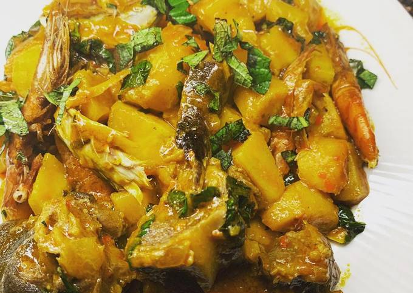

Plantain Porridge is native to the Niger Delta Region of Nigeria, especially Bayelsa state where unripe plantain is one of their staple foods.
There is no one recipe for this delicious nutritious dish, it can be prepared with either unripe or ripe plantain or a combination of both.
Versions of plantain porridge vary widely from region to region and household to household.
The quantity of ingredients can be adjusted to achieved a desired taste
- 2 medium sized Plantains( ripe , semi ripe or unripe)
- 1 smoked fish or fresh fish(preferably mackerel ”titus fish” (smoked fish should not be too dry, if using)
- About 400gram or 1 bunch Ugwu leaves(use Spinach, Kale or Green amaranth as substitute)
- 1 large Onion bulb
- 1 tablespoonful Ground Crayfish
- 1 cooking spoonful Palm oil(use tomato stew or stew oil as substitute)
- 1 Large seasoning cube or 1 teaspoonful seasoning powder
- Chili or Scotch bonnet (atarodo) Pepper to taste
- Salt to taste
Ingredients
- Peel and chop the onions;
Chop or grind the pepper,
Wash, peel and cut the plantains into small sizes.
Then wash the vegetables and slice into thin strips and set all aside for later use. - Wash and clean the fish .
If using smoked fish, clean with hot water and set aside
If using fresh fish remove the gut, cut and set aside. - Place the plantains into a pot, add enough water to slightly cover the plantains.
Then add the chopped onions, the fish, ground crayfish, pepper and seasoning cube or powder.
Leave to cook until it starts to boil. - Add the palm oil (or tomato stew or stew oil) and salt to taste.
Leave to cook until the plantains are tender - Add the sliced vegetables, and simmer covered for 3 minutes .
Stir thoroughly, serve and enjoy
Method of Preparation

Delicious Grill Chicken
product of Delicious Recipes

Delicious Cake Bread
product of Delicious Recipes

Sumptuous Sandwich
product of Delicious Recipes

Sumptuous Pizza
prepared by Delicious Recipes